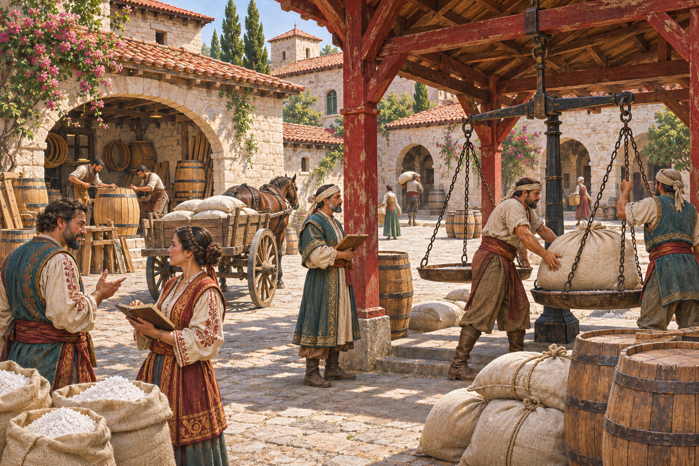
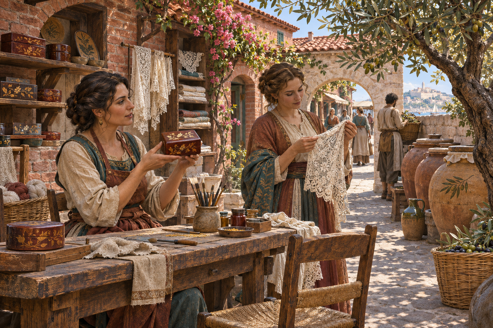
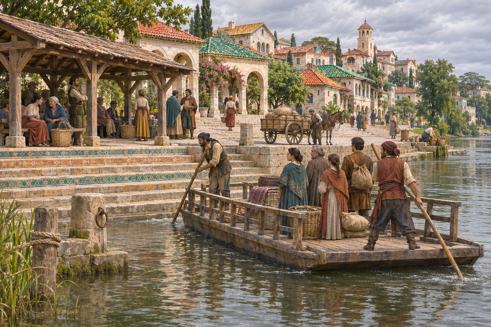
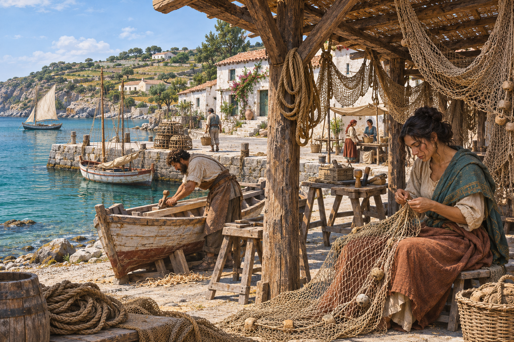
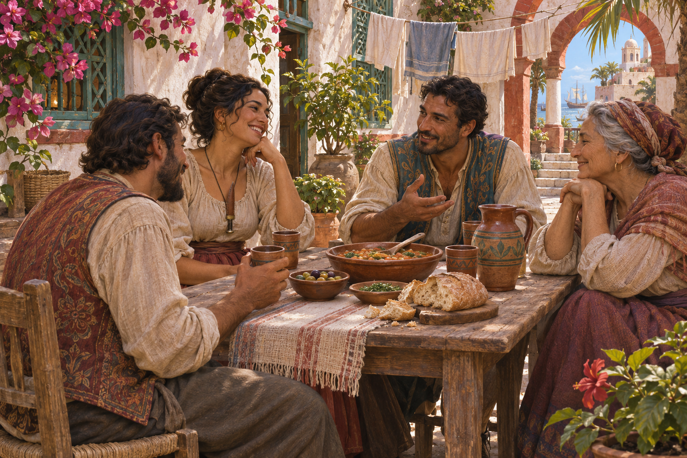

Страна и её история
Алтара на 285 ПБ
На 285 ПБ Алтара живёт под прямым имперским управлением, сохраняя сильную привязанность людей к родному городу, области и местным связям. Эбу Дар объединяет главное портовое хозяйство и наместническое управление. За его пределами повседневная жизнь складывается вокруг других городов, владений, сельских общин и путей сообщения.
Принадлежность к Алтаре, местное происхождение и отношение к имперской службе могут иметь для одного человека разное значение. Житель способен дорожить обычаями своей области, работать на имперский заказ и спорить с чиновником о расходах. Его политические убеждения и личные привязанности определяются собственной жизнью.
Корона на рубеже эпох
К концу Третьей Эпохи Алтара подошла с давним разрывом между притязаниями короны и самостоятельностью местных владетелей. Эбу Дар был столицей, но способность монарха распоряжаться жизнью всей страны оставалась ограниченной.
Приход шончан изменил положение короны. Беслан сохранил королевский титул, принёс присягу Туон и получил подтверждение власти своего дома под верховенством Империи. Алтарская корона вошла в новый политический порядок как подчинённая власть.
Первый век после Последней Битвы
В первые послевоенные поколения Алтара сохраняла собственную корону под верховной властью Империи. Эбу Дар оставался главным местом взаимодействия королевского двора, имперских представителей, портового хозяйства и местных влиятельных семей.
Восстановление страны шло через множество отдельных работ: возвращение хозяйств в оборот, ремонт домов и мастерских, возобновление перевозок и заселение пригодных для жизни мест. Корона и имперские службы участвовали в этих процессах, но значительную часть повседневной работы организовывали сами города, владетели, общины и профессиональные объединения.
Так складывался порядок, в котором верховная власть требовала исполнения общих обязательств, а местные участники сохраняли знания, людей и имущество, необходимые для их выполнения. Различия между столицей, внутренними областями и малыми прибрежными поселениями продолжали влиять на управление страной.
За это время шончанское присутствие стало частью местной жизни. Семьи служащих, военных, ремесленников и переселенцев обосновывались в Алтаре. У людей появлялись связи, выходившие за пределы происхождения их предков, при сохранении различий свободного и несвободного положения.
Усиление имперских служб и спор о королевской власти
Оформление Хрустального Трона в 100–130 ПБ усилило значение имперской службы и личной связи с её верховной властью. Алтарская корона ещё сохранялась, однако всё больше общих задач выполнялось через имперское командование и подчинённые ему службы.
В течение первой половины II века ПБ обострялся спор о распределении полномочий и расходов. Королевский двор стремился сохранить влияние на назначения и сбор средств. Имперские представители требовали снабжения и исполнения поручений. Городские учреждения, профессиональные объединения и владетели добивались ясности: кто вправе требовать людей и имущество, какая обязанность уже исполнена и перед кем отвечать за задержку.
Особенно острыми становились случаи, когда разные власти предъявляли требования к одним и тем же запасам, перевозчикам или работникам. Некоторые местные влиятельные круги видели в короне защиту от прямого имперского вмешательства; другие считали королевский двор дополнительным источником расходов и соперничающих распоряжений.
Усиление Хрустального Трона создало условия для политических перемен, но не упразднило корону автоматически. Её прекращение потребовало отдельного решения.
Соглашение 146 ПБ
В 146 ПБ многолетний спор завершился соглашением между действовавшим алтарским монархом и верховной имперской властью. Его подготовку поддержала часть влиятельных городских и областных участников, рассчитывавших закрепить собственное положение при новом устройстве.
Соглашение заключалось под сильным имперским давлением. Последний монарх отказался от королевского управления. Суверен отдельным актом прекратил действие прежнего пожалования правящей власти дому Мицобар и учредил прямое управление Алтарой через назначаемого наместника.
Бывший монарх сохранил личную свободу и признанное за ним частное имущество. Королевский титул перестал быть действующей государственной должностью. Право управлять Алтарой больше не переходило по наследованию короны.
Городские учреждения, профессиональные объединения, общины и владетели сохранили признанные местные полномочия. Их участие в соглашении не давало им права избирать наместника или отменять решения суверена. Имперские обязательства и военная безопасность были сосредоточены в наместническом управлении.
146 ПБ считается годом учреждения прямого управления. Передача дел и закрепление практического порядка заняли последующие годы и проходили в разных частях страны неодинаково.
Алтара при наместниках: 146–270 ПБ
За последующие поколения наместничество стало привычной формой государственной власти. Тарасинский дворец закрепился как главная резиденция наместника; его прежняя королевская история сохранилась в памяти города.
Гавань, дороги, склады, рынки и ремесленные связи поддерживали значение Эбу Дара. Внутренние города и сельские области продолжали жить собственными хозяйственными связями. Их зависимость от столицы различалась по занятиям, направлениям перевозок и участию в имперских заказах.
Изменения сообщения и опасности эпохи повышали значение людей, способных организовать местные запасы, перевозку, ремонт и размещение. Наместническое управление опиралось на таких исполнителей, одновременно требуя от них отчётности и выполнения общих обязательств.
Порядок оставался предметом споров. Имперская служба давала заработок и возможности возвышения, а её требования могли отнимать людей, время и средства у местных нужд. Отношение к власти зависело от конкретного опыта семьи, города, владения и службы.
Королевское наследие на 285 ПБ
На 285 ПБ действующей алтарской короны нет. Государственную власть осуществляет имперский наместник в пределах своего мандата, а повседневные местные дела ведутся по действующему распределению полномочий.
Память о королевстве сохраняется в истории семей, старых названиях и рассказах о прежних правителях. Соглашение 146 ПБ оценивают по-разному. Для одних оно стало отказом от собственной политической власти; для других — прекращением дорогостоящего соперничества двора и имперских служб. Такое отношение не определяется автоматически алтарским или шончанским происхождением человека.
Происхождение от старого правящего дома само по себе не даёт действующей власти над страной.
Последнее пятнадцатилетие: 270–285 ПБ
К 285 ПБ Алтара входит в обостряющийся мировой кризис с давно сложившимся наместническим устройством. Прямое управление существует уже почти полтора столетия; оно не является недавней чрезвычайной мерой.
Возрастающие трудности восстановления и сообщения усиливают споры о запасах, работниках, перевозках и доступной помощи. Там, где требуется ремонт, лечение или обход повреждённого участка пути, всё заметнее значение местных исполнителей и условий их работы.
При этом страна сохраняет обычную жизнь: хозяйства производят пищу, мастерские принимают заказы, семьи устраивают праздники, люди путешествуют и лечатся. Конкретные последствия кризиса определяются состоянием соответствующего места; общая угроза не означает, что каждый город или дорога поражены аномалией.
Современные условия для свободных направляющих, дамане и сул’дам определяются отдельно принятыми правилами. Действующий в Алтаре запрет захвата свободных женщин для обращения в дамане не переносится задним числом на всю послевоенную историю страны.
Земли и города
К статьям о поселениях: Эбу Дар, Журадор, Мадерин, Ремен, Малден, Салидар, Каменный Берег.
Море и соседние земли
Алтара сохраняет положение страны на Море Штормов. Главными речными ориентирами остаются Эльдар на западном направлении и Манетерендрелле на восточном. На западе страна соседствует с Амадицией, на востоке — с Иллианом; северные подходы связывают её с Гэалданом, Андором и Муранди.
Берег и внутренние области
Эбу Дар и нижний Эльдар. Столица, речное устье и ближайшая сельская округа тесно связаны снабжением большого города. Здесь сосредоточены портовые работы, городские ремёсла, перевозка и хранение грузов, имперская служба. В пригородах хозяйства работают для городского рынка. Внутри самой области жизнь обеспеченного дома, мастерской, причала и деревни заметно различается.
Побережье и южные холмы за пределами столицы. Береговые поселения сочетают рыболовство, местные перевозки и обслуживание судов с хозяйством прилегающей суши. На пригодных землях сохраняются оливковые рощи и виноградники. Малый порт обслуживает свою округу и отдельные направления обмена; набор его мастерских, запасов и перевозчиков зависит от размеров и назначения.
Западные земли вдоль Эльдара. Здесь важны сельские поселения, лесные участки, местные рынки, подходы к реке и связи с Амадицией. Переправа соединяет разные порядки управления и хозяйственные интересы. Жизнь общины зависит как от состояния собственного угодья, так и от возможности добраться до рынка и соседнего берега.
Внутренние и северные земли. Поля, пастбища и леса перемежаются владениями и торговыми городками. Местные центры связывают сельские хозяйства с ремеслом, хранением и продажей продукции. По мере продвижения на север заметнее различия с Эбу Даром в одежде, застройке и привычных связях с соседними землями.
Восточные земли и направления Манетерендрелле. Поселения связаны с собственной сельской округой, речными участками и дорогами к восточным и северо-восточным соседям. Здесь существенны перегрузка между сушей и водой, работа перевозчиков и обслуживание проезжающих. Возможность плавания определяется для конкретного участка реки и судна.
Эбу Дар
Эбу Дар стоит у устья Эльдара, где речное движение встречается с морскими перевозками. Здесь находятся наместнические учреждения, крупные рынки, склады, судовые мастерские и места найма. В городе работают грузчики, лодочники, писцы, посредники, торговцы, ремесленники и люди имперской службы.
В столицу прибывают морем, по нижнему течению реки и сухопутными дорогами из внутренних областей. Перегрузка между этими путями составляет важную часть городской работы. Морское судно, речная лодка и обоз обслуживают разные участки перевозки.
Повседневные дела ведут городские учреждения и профессиональные объединения в пределах признанного порядка; имперские обязательства и военная безопасность относятся к наместнику. Для приезжего город предлагает выбор ночлега, обычного ремонта, снабжения и платной помощи лекарей. Возможности конкретного исполнителя и условия заказа различаются.
Тарасинский дворец
На 285 ПБ Тарасинский дворец сохраняет историческое название и служит главной резиденцией наместника Алтары в Эбу Даре. Комплекс неоднократно ремонтировался и перестраивался. В нём сохраняются части старого дворца, однако нынешние помещения, служебные корпуса и порядок доступа не воспроизводят план конца Третьей Эпохи.
Дворец узнают по светлым фасадам, куполам, цветной отделке и внутренним дворам. Сохраняется его связь с площадью Мол Хара. Площадь остаётся важным городским ориентиром; старые изображения площади не подтверждают сохранность каждой древней статуи и первоначального украшения.
Здесь находятся жилые помещения наместника, залы официального приёма и службы, непосредственно обеспечивающие его управление. Повседневные городские обращения по-прежнему рассматривают местные учреждения в пределах своих полномочий.
Посетитель приходит во дворец для назначенного приёма, передачи обращения по имперскому делу или исполнения согласованного поручения. В приёмную часть допускают после объявления цели и проверки у охраны; проход в служебные и жилые помещения требует отдельного основания. Для личного оружия действует принятый порядок охраняемых мест.
Старые залы, отделка и сохранившиеся предметы могут показываться приглашённым посетителям по условиям приёма. Свободный осмотр всего комплекса не предусмотрен.
Рахад
Название Рахад сохраняется за частью Эбу Дара на восточном берегу Эльдара. За прошедшие столетия район неоднократно менялся: старые дома разбирали, перестраивали и надстраивали, проходы расширяли либо застраивали заново. Нынешний Рахад не состоит целиком из сохранившихся зданий конца Третьей Эпохи.
Здесь живут семьи работников, мелких торговцев, перевозчиков и ремесленников. Встречаются тесные жилые дворы, недорогие места ночлега, мастерские и склады. Положение дома возле оживлённой переправы, рынка или рабочего двора может заметно отличаться от положения в стороне от основных проходов.
У Рахада сохраняется репутация тяжёлого и небогатого района. Её поддерживают отдельные опасные места, семейная память и рассказы о прошлом. Эта репутация не описывает каждого жителя и не означает одинаковой опасности всех улиц.
Сюда приходят за недорогой работой, обычным ремонтом, перевозчиком, местными товарами или встречей с человеком, живущим за рекой. Знакомство с хозяином двора, рекомендация работника и понятная цель визита помогают установить отношения.
При подготовке поездки важны конкретный адрес, путь к нему, время возвращения и способ переправы. Богатая одежда и открытое предъявление денег могут привлечь нежелательное внимание; безопасность не определяется одним названием района.
В Рахаде действует местный гражданский порядок. Обращение за помощью и разбор частного спора доступны по обычному гражданскому порядку Алтары. Появление имперских сил связано с их задачами и полномочиями, а не с постоянным одинаковым контролем каждого двора.
Гавань
На 285 ПБ гавань Эбу Дара остаётся действующим портовым хозяйством, которое многократно восстанавливали и расширяли после войн, пожаров, износа и изменения потребностей судоходства. Последствия морского боя перед Последней Битвой не сохраняются повсеместно в виде тех же неубранных обломков.
Рабочие причалы, места перегрузки, лодочные подходы, склады и ремонтные площадки обслуживают разные суда и грузы. Подходящее место стоянки определяется осадкой судна, состоянием причала и назначением работ. Речной перевозчик, прибрежное судно и большой морской корабль используют разные возможности порта.
Путник приходит в гавань, чтобы найти рейс, отправить груз, наняться на работу, заказать перевозку к судну или обратиться к судовому мастеру. Перевозчик и грузовой двор отвечают за согласованный участок услуги; дальнейшая доставка требует собственной договорённости.
Гражданские портовые дела ведут местные учреждения и профессиональные объединения в пределах принятого порядка. Военная безопасность, имперские суда и исполнение соответствующих обязательств относятся к ответственным имперским службам.
Историческую память сохраняют названия, рассказы семей, отдельные поднятые предметы и сведения о прежних перестройках. Возраст поднятого предмета и его связь с известным сражением устанавливают по свидетельствам.
Портовая работа продолжается вместе с обычной городской жизнью. Помощь, ремонт и отправление зависят от людей, погоды, материалов и занятости. Само существование гавани не гарантирует немедленного рейса, свободного причала или ремонта любого судна.
Где остановиться
У трёх описанных постоялых заведений собственницы — свободные женщины. Размещение, содержание животных и хранение груза согласуют с выбранным заведением.
«Синий фонарь» — простой ночлег у портовых дорог
Небольшой постоялый дом стоит на улице, по которой от рабочих причалов идут к складам и местам найма. Над дверью висит синий стеклянный фонарь в железной оправе; вечером его свет виден из-под навеса, где сушат дорожные плащи.
Здесь останавливаются работники, небогатые проезжие и люди, ожидающие своего судна. Основное размещение — места в общем спальном помещении. Есть несколько небольших комнат, которые часто заняты надолго. В общем зале подают простую горячую пищу; о времени раннего выхода можно договориться с хозяйкой.
Цена относится к нижнему городскому уровню. Постель, пищу и хранение вещей оговаривают отдельно. Ценное имущество принимают на хранение по отдельной договорённости; место рядом со спящим не считается охраняемой кладовой.
Собственного большого двора для обоза нет. Хозяйка знает соседних исполнителей, у которых можно разместить животное или груз, но их услуги оплачиваются отдельно. «Синий фонарь» подходит для ожидания рейса, поиска обычной работы и недорогой остановки на несколько ночей.
«Дом трёх арок» — постоялый двор для торговцев и путешественников
Заведение находится на сухопутном подходе к торговой части города. Три светлые арки ведут в закрываемый внутренний двор: через одну проходят повозки, две другие открываются к жилой части и хозяйственным помещениям.
Здесь есть отдельные комнаты и общее размещение для сопровождающих, конюшня, место для обычных дорожных повозок и кладовые для принятых грузов. Удобства рассчитаны на подготовку к поездке: можно просушить вещи, привести в порядок упряжь и найти исполнителя для мелкого ремонта.
Стоимость — средняя по городским меркам. Содержание животных, хранение груза и работа приглашённых мастеров считаются отдельно. Для большого обоза заранее согласуют число людей, животных и повозок; весь двор не предоставляется одному заказчику автоматически.
В общем зале обмениваются новостями дорог и договариваются о совместном выходе. Хозяйка может познакомить гостя с известным ей перевозчиком. Заказ всё равно заключают с самим исполнителем, определяя участок пути и состав услуги.
«Белая цапля» — дорогое размещение возле Мол Хара
Постоялый дом расположен в городской части недалеко от площади Мол Хара. Его узнают по изображению белой цапли над входом, светлым занавесям галереи и небольшому двору с водой и растениями.
Здесь снимают комнаты состоятельные торговцы, гости влиятельных домов и люди, приехавшие по официальным делам. Заведение предлагает отдельное размещение, комнаты для сопровождающих, более внимательное обслуживание и возможность принять посетителя за отдельным столом или в небольшой гостиной.
Стоимость высокая. По поручению гостя прислуга может передать письмо, пригласить признанного городского исполнителя или подготовить экипаж к согласованному часу. Оплата такой услуги покрывает её исполнение, но не покупает согласия адресата или приёма у должностного лица.
Приглашённых посетителей объявляют хозяевам комнат. Размещение большой свиты и особые требования к хранению имущества согласуют заранее. Близость дворца удобна для назначенного визита; порядок прохода во дворец остаётся самостоятельным.
Кузницы и ремонт
«Железный обод» — дорожная кузница
Кузница стоит возле дворов, обслуживающих сухопутные перевозки. Под навесом видны колёсные ободы, связки подков, заготовки скоб и детали повозок. Посетители чаще приходят сюда с поломкой, чем за нарядной покупкой.
Основные работы — подковы, металлические части упряжи и повозок, крепления, хозяйственный инструмент и простые изделия для дороги. Мастер оценивает, что можно исправить, а какую деталь следует заменить. Кожаные части снаряжения передают работающему рядом шорнику по отдельному заказу.
Цены соответствуют обычной рабочей мастерской. Ходовые заготовки могут оказаться в наличии; необычный размер или большой заказ потребует изготовления. Срочный ремонт принимают с учётом текущей работы и материалов.
Здесь удобно подготовить повозку к выходу, заменить сломанное крепление и восстановить рабочий инструмент. За сложной переделкой оружия или доспеха мастер направляет к подходящему специалисту.
«Кривой клинок» — оружейная мастерская
Над дверью мастерской висит изогнутый клинок, а в витрине выставлены образцы рукоятей, ножен и небольших металлических деталей. Заведение находится среди ремесленных и торговых домов, куда приходят за личным снаряжением.
Здесь изготавливают и чинят обычное клинковое оружие, подгоняют рукояти, восстанавливают крепления и принимают отдельные работы с металлическими частями доспеха. Возможности конкретной починки определяют после осмотра вещи.
Особое направление — дуэльные и брачные кинжалы. Клиент выбирает размер, удобство хвата и отделку. Для сложных ножен, колье и украшений мастерская сотрудничает с кожевниками и ювелирами; эти части заказа имеют собственную цену и срок.
Стоимость зависит от качества работы и отделки. Простой ремонт может обойтись умеренно, а новый нарядный кинжал стать дорогой семейной покупкой. Известность мастерской относится к обычному оружейному ремеслу; работу с тер’ангриалом или необычным материалом принимают только при подтверждённой возможности её выполнить.
«Якорная цепь» — портовая кузница тяжёлых изделий
Кузница расположена у портовых ремонтных площадок. Возле неё лежат тяжёлые кольца, заготовки крюков, скобы и секции цепей. Для доставки крупных изделий пользуются тележками и услугами грузчиков.
Мастерская обслуживает суда, причалы и склады: изготавливает и ремонтирует металлические крепления, цепи, крюки, части грузовых приспособлений и другие тяжёлые изделия. Заказ принимают по размерам, образцу или после осмотра места установки.
Для большого ремонта важны количество металла, доставка, доступ к судну или сооружению и согласованное время работ. Часть заказа выполняют в кузнице, часть — на месте. Переноска, погрузка и установка могут потребовать отдельных исполнителей.
Здесь полезно искать помощь при поломке судового или складского оборудования. Очередь портовых заказов влияет на срок. Если работа касается имперского судна или охраняемого сооружения, заказчик обеспечивает разрешение ответственной службы и допуск работников.
Лечение и уход
«Зелёная черепица» — дом обычного лечения и ухода
Небольшой лекарский дом узнают по зелёной черепице над входом и внутреннему двору, где сушат выстиранное полотно. Он находится в жилой части города, доступной с торговых улиц.
Здесь работают двое лекарей и помощники. Они принимают людей с обычными повреждениями и болезнями в пределах своего умения, обеспечивают уход и наблюдение. Для тех, кому требуется остаться, предусмотрены шесть мест; их занятость меняется.
Плата зависит от работы, расходных материалов и продолжительности ухода. Содержание лежащего больного и помощь сопровождающему согласуют отдельно. Длительный приём ограничен вместимостью дома и числом работников.
Сюда можно прийти за обычной помощью, оценкой состояния и уходом после полученного лечения. Если требуется иной специалист или Исцеление, лекари помогают определить дальнейшее обращение. Работа дома не предполагает постоянного присутствия направляющего.
«Малый сад» — частный приём Исцеления
Дом стоит в стороне от оживлённой улицы, за небольшим двором с растениями и скамьёй для ожидающих. Это место частного приёма, где одна свободная направляющая, владеющая Исцелением, работает по действующему гражданскому допуску.
Посетители обращаются с повреждениями и состояниями, которым она способна помочь. Объём работы определяют после осмотра и разговора. Способность к Исцелению не означает владения любым плетением или возможности устранить любое последствие.
Плановый приём согласуют заранее. Срочное обращение рассматривают с учётом состояния пострадавшего, присутствия исполнительницы и её оставшихся сил. Расход сил на нескольких пациентов может ограничить дальнейшую работу даже при наличии ожидающих.
Условия оплаты устанавливают до согласованного вмешательства, когда обстоятельства позволяют. Постоянных мест для длительного ухода в доме нет; после помощи человеку может потребоваться размещение у близких или в лекарском доме.
«Малый сад» действует по гражданскому порядку. Обращение сюда не требует личной присяги, поступления на службу или принятия положения дамане. Исполнительница остаётся свободным человеком и выполняет согласованную работу в пределах своих возможностей.
Журадор

Журадор сохраняется как город соляных промыслов и торговли солью. В его округе работают промысловые хозяйства, а в городе — склады, бочарные мастерские, торговые дворы и перевозчики. Соль поступает на местные рынки, во внутренние области и к покупателям, связанным с Эбу Даром.
В облике города заметны каменные дома, красноватая черепица и просторные хозяйственные дворы. Одежда местных состоятельных семей чаще подчёркивает достаток вышивкой и качеством ткани; столичный покрой здесь не является общим образцом.
Повседневные работы и рынки ведут местные учреждения и профессиональные объединения. Владельцы промыслов и крупных складов влияют на жизнь города через заказы, имущество и перевозки, но их богатство само по себе не даёт права отдавать имперские распоряжения.
Сюда прибывают по сухопутным дорогам. Путнику доступны постоялые дворы, продовольственный рынок, кузнечный и колёсный ремонт, наём возчиков и работников. Характерные места — соляные склады, ряды бочаров и дворы оптовой продажи.
«Красные весы» — соляной торговый двор
Торговый двор стоит среди складов и бочарных мастерских Журадора. Его узнают по большим весам под навесом: стойки и перекладина окрашены в красный цвет, хорошо заметный над светлыми мешками и бочками.
Здесь принимают партии соли, проверяют вес перед передачей, готовят груз к хранению и сухопутной отправке. Во дворе можно найти работников для переноски, договориться с бочаром о замене тары и познакомиться с возчиком, принимающим груз на следующий участок.
Хранение, тара, погрузка и перевозка составляют разные услуги. При передаче партии устанавливают её количество, состояние упаковки и того, кто принимает ответственность за дальнейшее хранение. Для небольшого покупателя двор может быть удобным местом сравнить предложения нескольких торговцев.
Это один из действующих дворов города. Его владельцы распоряжаются своим имуществом и согласованной работой; находящиеся здесь весы не дают им права судить любой торговый спор или говорить от имени наместника.
Путник приходит к «Красным весам» за солью в дорогу, работой при отправке обоза, подходящей тарой или перевозчиком. Сезонная загрузка и размеры партии влияют на срок обслуживания.
Мадерин

Мадерин сохраняется как торговый и ремесленный город, связанный с сельскими хозяйствами и оливковыми рощами своей округи. Здесь производят и продают масло, лаковые изделия и кружева. Часть мастерских работает для местных жителей, часть выполняет заказы торговцев и обеспеченных семей из других мест.
В городе сочетаются кирпичные дома под черепицей, мастерские при жилых дворах, масляные склады и помещения для показа товара. Для семьи изготовителя отделка вещи может быть знаком собственной работы и ученической преемственности.
Местные учреждения ведают рынками и общими работами; профессиональные объединения представляют интересы мастеров в пределах признанных полномочий. Отношения с имперской службой заметны через заказы, перевозки и исполнение обязательств.
Мадерин принимает путешественников по сухопутным дорогам. Здесь можно искать ночлег, припасы, ремонт дорожного снаряжения, мастера для обычного заказа и перевозчика на следующий участок. Характерные места — масляные дворы, мастерские лаковой отделки и ряды продавцов тканей и кружев.
«Лаковый лист» — дом ремесленного показа и продажи
«Лаковый лист» занимает жилой и рабочий двор среди мастерских Мадерина. Над входом закреплена деревянная ветвь с блестящими лакированными листьями. В передней комнате выставлены шкатулки, небольшие предметы обстановки и образцы отделки; отдельные столы отведены тканям и кружевам приглашённых изготовителей.
Дом объединяет собственную мастерскую и продажу изделий других местных мастеров. На вещи указывают изготовителя, материал и то, какая работа выполнена на месте. Заказчик может выбрать готовое изделие или обсудить вещь по образцу.
В определённые дни посетителям показывают отдельные приёмы работы: подготовку поверхности, нанесение узора, различия нитей и кружевного плетения. Доступ в рабочую часть зависит от текущего заказа и согласия мастера. Наблюдение за показом не означает полного обучения ремеслу.
Сюда приходят за подарком, отделкой семейной вещи, небольшим заказом для дома или знакомством с местной работой. Тонкая вещь требует упаковки; для крупного заказа заранее определяют изготовление, доставку и ответственность за повреждение в пути.
Репутация дома относится к ремеслу и качеству представленных изделий. Возраст предмета, его редкость и предполагаемое необычное назначение требуют собственного основания.
Ремен

Ремен сохраняется как город речной переправы и обмена между сухопутными и водными путями. Его хозяйство связано с пристанями, складами, переправой людей и грузов, ремонтом лодок, повозок и упряжи.
Разноцветная черепица остаётся узнаваемой частью городского облика. Пристанская сторона занята приёмом и хранением грузов; к внутреннему рынку сходятся дороги сельской округи.
Пересечение реки обслуживает паромная перевозка. Для переправы людей, животных, повозки и тяжёлого груза могут требоваться разные места и условия погрузки. Наличие пассажирского места не означает готовности перевезти весь обоз.
Повседневную работу города ведут местные учреждения; за устройство перевозки отвечают её исполнители в пределах установленных полномочий. В Ремене доступны постоялые дворы, рынок припасов, обычный ремонт и наём людей для погрузки и дальнейшей доставки. Участие в речной торговле не означает, что из города можно одним судном пройти весь путь до моря.
«Цветные ступени» — пристань переправы
Название пристани происходит от широких береговых ступеней с полосами разноцветной плитки. Их ремонтировали и перекладывали; внешний вид поддерживают как узнаваемый городской знак. Рядом устроены навес для ожидающих и площадка, где готовят груз к передаче на воду.
Здесь договариваются о переправе между городским берегом и берегом напротив. Пассажирская лодка, перевозка животного и место для повозки требуют разных условий. Для тяжёлого груза заранее устанавливают вес, способ погрузки и возможность принять его выбранным судном.
В загруженный день люди, животные и повозки могут ждать разное время. Плата за перевозку и услуги погрузчиков оговариваются отдельно. При изменении воды или погоды исполнитель может отложить выход либо изменить порядок посадки.
На пристани можно нанять помощь для переноса вещей, найти возчика после переправы и получить сведения о ближайшем участке дороги. Договорённость с одним перевозчиком заканчивается там, где установлено его обязательство.
«Цветные ступени» обслуживают местную переправу. Возможность пересечь здесь реку не подтверждает проходимость всего дальнейшего речного пути и не заменяет условий въезда, если последующая дорога ведёт через государственную границу.
Малден
Малден вновь стал действующим городом северной Алтары. Его хозяйство связано с овцеводческой округой, обработкой и продажей шерсти, местным вином, хранением припасов и сухопутными перевозками.
Нынешняя застройка складывалась после разрушений конца Третьей Эпохи и последующих перестроек. Город хранит память о захвате и освобождении.
Местные учреждения, общины округи и владельцы хозяйств договариваются о рынках, дорогах и общих работах в пределах имперского порядка. Для жителей важны доступ к воде, сезонный сбыт и сохранение запасов после исполнения обязательств.
В Малден прибывают по сухопутным дорогам. Здесь можно найти ночлег, продовольствие, тёплую одежду, ремонт повозок и снаряжения, работников для обоза. Характерные места — шерстяные дворы, склады и рынок сельской продукции.
«Семь тюков» — шерстяной двор и место городской памяти
Двор находится у хозяйственных улиц восстановленного Малдена. Над воротами изображены семь перевязанных тюков. Под навесами хранят подготовленную шерсть, а в крытой галерее показывают образцы пряжи, ткани и готовой тёплой одежды.
Здесь встречаются поставщики из округи, обработчики шерсти, изготовители и покупатели. Можно приобрести подходящую ткань или одежду, договориться о партии товара, найти работника для погрузки и обсудить отправку сухопутным обозом.
Различия качества объясняют по конкретному образцу: подготовке шерсти, плотности ткани, отделке и состоянию вещи. Цена определяется изделием и заказом; известность Малдена как шерстяного центра не делает всякий товар одинаковым.
В одной из галерей устроено современное место памяти о разрушениях и восстановлении города. Здесь вывешивают изготовленные позднее полотнища и деревянные изображения, связанные с рассказами семей. Их представляют как работу последующих поколений. Отдельная старая вещь включается в показ только с объяснением того, что известно о её происхождении.
Путники приходят сюда за тёплой одеждой, работой и сведениями о местных изготовителях, а жители — также ради встреч и семейной памяти.
Салидар
Салидар повторно заселён и живёт как небольшой город западной Алтары среди лесистых холмов. Его жители связаны с сельскими хозяйствами, обработкой древесины, местной торговлей и обслуживанием проезжающих.
История собрания Айз Седай входит в местную память. О прежнем Салидаре рассказывают отдельно от нынешней работы города: известность места не даёт его жителям полномочий Белой Башни и не устанавливает современного права убежища.
Городские дела ведут местные исполнители и община в пределах признанного порядка. До подходов к Эльдару добираются по дороге.
Здесь есть простой ночлег, рынок местных припасов, мастера обычного дорожного ремонта и люди, знающие ближайшие пути. Для путешественника город служит местом подготовки к западному направлению. Условия перехода в Амадицию определяются отдельно.
«Двор западной дороги» — остановка перед дальнейшим переходом
Небольшой постоялый двор расположен у выхода на дорогу, связывающую Салидар с западной округой и подходами к Эльдару. Его знак — деревянный дорожный столб с несколькими резными указателями над воротами.
Собственница — свободная женщина из местных жителей. Заведение предлагает простой ночлег, горячую пищу, место для нескольких дорожных животных и ограниченное хранение вещей. Небольшую группу принять легче, чем большой обоз; размещение повозок и необычного груза согласуют заранее.
Здесь можно найти человека, знающего ближайшие дороги, договориться о сопровождении на местном участке и узнать о состоянии подходов к переправам. При найме называют место окончания работы проводника и то, входит ли ожидание задержавшихся путников.
В общем зале встречаются жители окрестностей и проезжие. Старую известность Салидара помнят, но рассказы о собрании Айз Седай относятся к истории города. Постоялый двор не является представительством Башни и не обладает особым правом убежища.
Остановка помогает подготовиться к западному направлению. Ночлег, местный проводник и сведения о дороге не заменяют условий пересечения границы с Амадицией.
Каменный Берег

Каменный Берег — небольшой алтарский порт на побережье восточнее Эбу Дара. Поселение выросло после Последней битвы у защищённой бухты.
Здесь живут рыбаки, лодочники, судовые плотники, изготовители сетей, работники складов и семьи, связанные с хозяйствами ближайшей округи. Прибрежные суда доставляют местную продукцию в другие гавани и привозят необходимые товары.
Каменная набережная, площадка для вытаскивания лодок и навесы для сетей составляют узнаваемую часть поселения. Небольшая гавань принимает лодки и подходящие прибрежные суда; крупным морским кораблям может потребоваться стоянка с перегрузкой вне причалов.
Повседневными делами ведают местные исполнители и община; требования имперской безопасности действуют в пределах признанных полномочий. Путник может найти простой ночлег, пищу, воду, мелкий судовой ремонт и перевозчика по побережью. Сложное лечение, большой ремонт и редкое снаряжение требуют поиска за пределами поселения.
«Сетяной навес» — место прибрежного найма и ремонта
Длинный навес стоит рядом с площадкой, где лодки вытаскивают из воды. Под крышей висят сети, связки верёвок и приготовленные к работе деревянные детали. На наружной стойке закреплены образцы узлов и небольшой вырезанный из дерева поплавок.
Здесь работают изготовители и ремонтники сетей, лодочные плотники и люди, принимающие мелкие заказы по снаряжению. Можно починить сеть, заменить отдельную деталь лодки, подготовить снасти и найти помощь для вытаскивания или спуска судна.
У навеса также договариваются о прибрежной перевозке. Владелец или уполномоченный перевозчик определяет, кого и что примет, до какого места идёт и где сможет высадить пассажиров или передать груз. Место в лодке не означает возможности принять большую партию товара.
Объём ремонта зависит от имеющихся материалов и умения мастера. Тяжёлое повреждение корпуса, сложная металлическая работа и необычный заказ могут потребовать обращения в более крупный порт.
Погода и состояние моря влияют на выход. Договорённость о поездке не превращает неподходящие условия в пригодные для плавания. У «Сетяного навеса» удобно подготовить лодку и груз, подобрать исполнителя и установить пределы следующего участка пути.
Повседневная жизнь и обычаи

Дом и повседневный стол
В Эбу Даре и других торговых городах многие семьи живут рядом с местом заработка: над мастерской, при торговом дворе, возле склада или в квартале работников одного занятия. Двор, лестница, колодец и место приготовления пищи могут служить нескольким хозяйствам. В состоятельном доме больше пространства для гостей, хранения припасов и работы прислуги; семья небогатого работника теснее зависит от соседей и ежедневного заработка.
В сельской области дом связан с участком, садом, пастбищем и хозяйственными постройками. Работа и домашние дела следуют сезону. Подготовка запасов, починка инструмента, уход за животными и доставка продукции на рынок занимают заметное место в жизни семьи.
Основу обычной пищи составляют хлеб, крупяные и овощные блюда, похлёбки и продукты ближайшей округи. На побережье и у речных рынков чаще едят рыбу; оливковое масло заметнее на юге, продукты пастбищного хозяйства — во внутренних и северных землях. Дорогие привозные продукты, тонкое вино и обильное мясное угощение зависят от достатка и случая.
Принимая гостя, семья показывает свои возможности через чистое место, пищу, питьё и внимание хозяев. Скромный стол может быть достойным приёмом. Показное пренебрежение к дому или труду хозяев способно обидеть сильнее, чем незнание отдельного обычая.
Работа, соседство и взаимная помощь
В портовом квартале день зависит от прихода судов, разгрузки и состояния воды; в ремесленном — от заказов, поставок и работы учеников; в сельской округе — от погоды, животных и полевых дел. Поэтому единый столичный распорядок не описывает всю страну.
Люди знают друг друга по работе, родству, общим расходам и прежним услугам. Рекомендация знакомого мастера помогает получить заказ, сосед может присмотреть за детьми или хозяйством, родственник — предоставить место на первое время. Такие связи создают возможности и обязательства: помощь помнят, а отказ объясняют обстоятельствами и отношениями.
Общие работы имеют видимый результат. Починенный водосток, очищенный проход, укреплённый причал или исправная повозка важны для повседневной репутации исполнителя. Разговоры о человеке складываются из того, как он платит, держит слово, обращается с работниками и выполняет обещанное.
Имперский заказ может дать заработок мастерской и одновременно занять людей, нужных соседям. Изъятие перевозки или припасов затрагивает сроки семейных и местных дел. Обсуждая службу, жители часто говорят о конкретном: кто уехал, какой заказ отложен, что получено взамен и какие обязательства ещё предстоит исполнить.
Одежда, речь и местное происхождение
Эбу Дар сохраняет узнаваемую одежду столицы. Мужчины носят длинные вышитые жилеты — поверх светлой рубашки с широкими рукавами или, в подходящей обстановке, на голое тело. У состоятельных горожан встречается небольшой шёлковый камзол, наброшенный на плечи и удерживаемый нарядной цепью.
В женской одежде заметны светлые ткани, цветные юбки и различия отделки по достатку и общественному кругу. Традиционный узкий глубокий вырез простолюдинок отличается от круглого или овального выреза знатных дам. Рабочая, дорожная и праздничная одежда одного человека также различается.
За пределами столицы одежда обычно проще и теснее связана с занятием и местными условиями. На севере заметнее связи с соседними землями; столичный покрой не служит обязательным признаком принадлежности к Алтаре. Вышивка, качество ткани, следы починки и способ носить украшения могут рассказать о человеке больше, чем один цвет.
Мягкий столичный акцент и сокращение некоторых слов сохраняются как узнаваемая особенность Эбу Дара. Жители других областей не обязаны говорить так же. Люди, часто работающие с приезжими, привыкают к чужой речи и могут менять манеру разговора в зависимости от собеседника.
Семья и брачный кинжал
Брачный кинжал остаётся особенно заметным семейным знаком в Эбу Даре и его окрестностях. Муж дарит его жене при заключении брака; женщина носит его в ножнах на колье рукоятью вниз. Традиционные слова при дарении говорят о том, что жена должна сразить мужа этим кинжалом, если он ей не угодит. Так обычай выражает ответственность мужа перед женой и представление о семейной чести; правовые последствия причинения вреда определяются отдельно.
Сохраняется принятая символика. Белые ножны обозначают вдову, не намеренную вступать в новый брак; синие — вдову, готовую рассмотреть такое предложение. Незамужняя женщина, желающая вступить в брак, может носить одно колье, а помолвленная — пустые ножны.
Детей обозначают камнями или бусинами: белыми — сыновей, красными — дочерей. Драгоценные камни характерны для богатого дома, стеклянные бусины — для более скромного. Если сын погиб в поединке, его знак покрывают красной эмалью; если дочь — белой. Смерть по другой причине обозначают чёрной эмалью.
В некоторых семьях знак ребёнка, отказавшегося от поединка после достижения шестнадцати лет, снимают как выражение отречения. Отношение к этому различается: одни считают такой поступок обязательным для семейной чести, другие отказываются разрывать отношения с живым человеком из-за общественного осуждения.
Украшение хранит семейную память, но посторонний видит лишь её условные знаки. Не каждая женщина следует обычаю, не каждая носит полный набор отметок, а личная история может быть болезненной темой. Рассматривать ножны как повод требовать рассказа о погибших детях считается навязчивостью.
Честь, разговор и репутация
Смелость, способность отвечать за свои слова и готовность защитить близких сохраняют общественное значение. В кругу дуэлянтов особенно ценят выдержку перед вызовом и достойное поведение в поединке. В мастерской, торговом дворе или общине репутацию также создают умение работать, честный расчёт и надёжность в трудный день.
Фраза «Обопрись на нож и развяжи язык» означает обещание выслушать неприятное без обиды, кроме сознательной лжи. Её употребляют, когда хотят услышать прямой ответ или дать человеку возможность высказаться после ссоры. Поднятые перед собой руки ладонями друг к другу служат знаком отсутствия намерения применить насилие.
Знание выражения помогает понять разговор, но значение имеет и то, как человек держит данное слово. Тот, кто обещал спокойно выслушать, а затем мстит за услышанное, рискует собственной репутацией.
Отношение к обиде зависит от круга и обстоятельств. Молодой участник поединков, пожилой мастер, торговка на рынке и человек на имперской службе могут по-разному оценить одну резкость. Столичная известность дуэлей не делает каждую встречу обязательным испытанием храбрости.
Праздники и развлечения
Эбу Дар сохраняет Фестиваль Птиц с масками, перьями и нарядными костюмами. Одни готовят дорогой праздничный убор, другие переделывают старую одежду или ограничиваются маской и несколькими яркими деталями. Для портных, изготовителей украшений, музыкантов, продавцов еды и содержателей заведений праздник означает дополнительную работу.
Во время Фестиваля Светильников разноцветные бумажные фонари вывешивают у окон, на деревьях и над местами общего собрания. Богатый двор может устроить сложное убранство, а соседи — собрать небольшую общую гирлянду. Этот праздник известен и за пределами Алтары; местное исполнение различается между городами и общинами.
Внутренние области сохраняют собственные ярмарочные и семейные поводы для собраний. Столичный размах зависит от числа участников, денег и привычных занятий. В малом поселении важнее общий стол, музыка, встреча родственников и возможность продать привезённое.
Игры в кости и карты, пари и конные состязания остаются распространёнными развлечениями. В Эбу Даре скачки могут собирать большую публику за городом. Ставки бывают частью дружеской игры и способом проиграть существенную долю семейных денег; отношение близких к азарту зависит от его последствий.
Алтарцы и шончан в повседневной жизни
Имперское присутствие включает военных, гражданских служащих, работников, семьи и людей, родившихся уже в Алтаре. Происхождение, гражданское положение и отношение к службе могут по-разному сочетаться в одном доме.
В общем дворе, мастерской или торговом деле люди привыкают к личным особенностям соседей. Совместная работа, семейные связи и многолетнее знакомство способны создавать доверие. Различия в обращении со старшими, требованиях общественного положения и отношении к направляющим при этом сохраняются.
Шончанские привычки искать предзнаменования остаются частью домашнего быта. Птица, залетевшая в помещение, необычное поведение животного или другой знак могут изменить чьи-то планы. Алтарские соседи способны разделять такую тревогу, добродушно спорить с ней или раздражаться из-за отложенного дела. Уверенность человека в предзнаменовании не устанавливает его истинность.
Спор об имперском требовании не обязательно означает вражду с каждым шончанским соседом. Служба Империи также не отменяет местных привязанностей. Человек может дорожить родным городом, сотрудничать с имперской службой и возражать против конкретного решения её представителя.
Несвободное положение остаётся существенной границей повседневной жизни. Свободный работник, да’ковале и дамане могут находиться рядом, имея разные возможности распоряжаться временем, выбирать работу и менять своё положение. Близость в быту или привязанность между людьми сама по себе этих различий не устраняет.
Власть и положение человека
В Алтаре личные отношения, гражданское положение, государственная должность и ранг Иерархии определяют разные стороны жизни. Свободный человек может работать без личной присяги; уже существующие несвобода или служебные обязательства от этого не исчезают. Да’ковале и дамане — несвободные люди; их положение отличается от положения свободного работника.
Местные связи и присутствие Империи
В Эбу Даре имперская власть чаще встречается человеку через наместнические учреждения, военную службу и портовые дела. В другом городе заметнее собственные профессиональные объединения, состоятельные семьи и местные должностные лица. В сельской области многие повседневные вопросы решаются через общину, владетеля и признанных местных исполнителей.
Эти различия определяют, с кем человек обычно договаривается, но не создают независимых государств внутри Алтары. Полномочия местных участников действуют в пределах признанного порядка.
Столичные одежда, речь и способы проводить праздники не обязательны для всей страны. Репутация складывается в конкретном кругу — среди родни, соседей, работников, сослуживцев или заказчиков. Общий обычай может сохраняться при различном отношении к нему отдельных семей и общественных групп.
Гражданские и имперские дела
В Алтаре наместник руководит исполнением имперских обязательств и военной безопасностью. Местные учреждения ведают повседневными городскими и областными делами в пределах признанного порядка. Их полномочия сохраняются и там, где рядом действует имперский гарнизон.
Обычные споры о частном найме, оплате, качестве работы и причинённом имущественном вреде разбирают уполномоченные местной власти. В городе это городской разбор; в сельской области — признанный разбор общины или владетеля. Точное устройство и названия этих органов могут различаться.
Профессиональные объединения рассматривают внутренние дела своих участников и дают заключения по ремеслу. Само членство одной стороны в гильдии не подчиняет другую сторону её внутреннему разбору. Спор с посторонним человеком передают местному уполномоченному, который может привлечь сведущих мастеров.
Дела об исполнении имперского приказа, действиях военного подразделения и требованиях к снабжению передают ответственной имперской службе. Смешанное дело рассматривают с участием местного уполномоченного и представителя соответствующей службы. Различие ведомств не отменяет ответственности за конкретные действия.
Имперские требования и их учёт
Сбор припасов, предоставление перевозки, размещение войск и другие обязательства исполняются через назначенных ответственных. Имперская должность или высокий ранг сами по себе не дают человеку любых полномочий распоряжаться местным имуществом.
При предъявлении требования называют ответственную службу, основание, необходимое имущество или работу и предполагаемый срок. Передачу припасов, использование перевозки и размещение людей учитывают так, чтобы было возможно установить, кто получил имущество или услугу и для какой задачи.
При срочной опасности требование может быть передано устно. Его содержание и исполнение записывают при первой возможности. Срочность не превращает полученное имущество в личную собственность распорядителя.
Спор о превышении требования можно передать старшему соответствующей службы; местные учреждения представляют сведения о переданном и о последствиях для общины. Такое обращение не приостанавливает приказ автоматически. Возмещение, оплата или зачёт определяются основанием конкретного требования; всеобщая бесплатная повинность и всеобщее право на полную оплату этим положением не устанавливаются.
Подданство и служба
В шестнадцать лет свободный подданный Алтары обязан пройти Принятие Воли по установленному имперскому порядку. Само Принятие оставляет отпечаток и открывает возможность связи, но не начинает постоянную передачу Воли и не выдаёт ранговых преимуществ.
После Принятия свободный взрослый подданный Алтары может вести хозяйство, работать по частному найму и участвовать в обычных гражданских отношениях без личной присяги конкретному звену Хрустального Трона. Отсутствие такой присяги само по себе не делает его чужеземцем, преступником или несвободным.
Для поступления на службу, предусматривающую личную присягу, её приносят отдельно. Условия службы, назначение на должность и получение механического ранга определяются своими основаниями.
Этот порядок относится к свободным жителям. Он не освобождает да’ковале или дамане, не отменяет уже существующую присягу и не заменяет Возврат Воли либо ритуал Освобождения.
Собственность и работа
В Алтаре сохраняется различие между правом собственности на землю и на суда. Частная земельная собственность принадлежит женщинам; частными владельцами кораблей и лодок могут быть мужчины. Владельцами трактиров и постоялых дворов могут быть женщины. Эти ограничения действуют по всей стране и распространяются также на свободных иностранцев, приобретающих соответствующее имущество в Алтаре.
Владение и работа различаются. Мужчина может обрабатывать арендованную землю, управлять хозяйством по поручению владелицы и получать оговорённую долю дохода. Женщина может работать на судне и участвовать в перевозках, не становясь его собственницей. Мужчины могут работать в трактире и вести порученные дела; собственницей заведения остаётся женщина. Допуск к конкретной профессии и обязанности перед гильдией определяются отдельно.
Наём, управление и вложение денег сами по себе не передают право собственности. Человек, которому поручены судно, хозяйство или заведение, распоряжается ими в пределах договорённости с владельцем. Спор о превышении поручения передают уполномоченному местной власти по порядку, описанному в разделе о гражданских делах.
Эти положения относятся к частной собственности свободных лиц. Казённое имущество, общинные угодья и имущество учреждений имеют собственные основания владения; имперский корабль не становится личной собственностью командующего.
Гильдии и постоянное занятие
В Эбу Даре человек, для которого ремесло, торговля, перевозки или другое охваченное гильдией занятие стали постоянным заработком, обязан состоять в соответствующей гильдии. Обязанность распространяется на самостоятельных мастеров и постоянно занятых работников. Сохраняется и Братство Милостыни, объединяющее людей, живущих попрошайничеством.
Гильдии ведают признанными профессиональными делами: подготовкой работников, внутренними отношениями участников, оценкой качества, участием в городских службах, работах и рынках. Они участвуют в распределении согласованных расходов в пределах своих полномочий. Членство не обещает каждому работу, заказ, достаток или помощь за счёт остальных участников.
Трактирщики освобождены от обязательного гильдейского членства по своему занятию. Это исключение не отменяет городских требований к заведению, договоров с поставщиками и ответственности перед постояльцами.
За пределами Эбу Дара профессиональные объединения сохраняют значение в пределах местного признанного порядка. Столичная обязанность не распространяется автоматически на каждую деревню, домашнее хозяйство и сельскую работу. Членство в столичной гильдии также не выдаёт безусловного права открыть дело в любом другом городе.
Обычное профессиональное членство и личная присяга Хрустальному Трону оформляются отдельно. Вступление в гильдию само по себе не начинает передачу Воли и не выдаёт ранговых преимуществ. Для службы, предусматривающей личную присягу, действует порядок подданства и службы.
Поединок и отказ от вызова
В Алтаре сохраняются поединки на личном оружии. По обычному дуэльному порядку вызов допускается с шестнадцати лет; мужчины вызывают мужчин, женщины — женщин. Различие состояния и происхождения влияет на общественную оценку вызова, но само по себе не делает поединок между простолюдином и знатным человеком невозможным.
Для признанного поединка требуется явное согласие обоих участников. При свидетелях стороны заранее называют оружие и условие окончания: первую кровь, признание поражения либо иной согласованный предел. Продолжение до гибели одного из участников должно быть оговорено особо. Поединок прекращается при достижении установленного условия или признании поражения.
Гибель в признанном поединке сама по себе не означает, что победитель совершил обычное убийство. При споре местный уполномоченный проверяет согласие, оговорённые условия и действия участников. Засада, нападение после окончания поединка и вмешательство постороннего не становятся законными лишь потому, что до этого прозвучал вызов.
Отказ от вызова не является преступлением. Он может повредить репутации, отношениям с роднёй, товарищами и соседями. В некоторых семьях отказ воспринимают как тяжёлый позор; другие предпочитают сохранить человека и уладить ссору. Закон не требует от каждой семьи одинаковой реакции и не превращает общественное осуждение в автоматическую потерю свободы или подданства.
Поединок не передаёт победителю права распоряжаться третьим человеком. Тот, из-за кого возник спор, сам определяет своё отношение к участникам. Исход дуэли также не отменяет долги, имперские обязательства и действующие служебные поручения.
Принятие вызова не уравнивает силы участников и не подавляет эффекты Иерархий. Механика боя определяется действующими правилами; новые способности и особые бонусы дуэлянтам этим положением не вводятся.
Разбор гибели мужчины от руки женщины
В местном разборе дел о гибели свободного мужчины от руки свободной женщины сохраняется презумпция оправданности её действий, пока не установлено обратное. Этот порядок действует и вне признанной дуэли. Он создаёт существенное различие в положении сторон, которое жители и приезжие должны учитывать.
Презумпция не препятствует разбору обстоятельств. Против неё могут быть представлены показания, следы и другие доказательства. Если установлены обстоятельства, опровергающие оправданность действий женщины, дело рассматривается с их учётом. Пол участников сам по себе не запрещает местному уполномоченному проверять произошедшее.
Брачный кинжал остаётся знаком брака, семейной памяти и положения женщины. Его дарение и сопровождающие его слова не являются самостоятельным доказательством законности последующего убийства мужа. В таком деле действует установленный порядок разбора, включая особую презумпцию, а обстоятельства брака учитываются вместе с прочими сведениями.
Отметки о детях и семейные способы выражать гордость, утрату или отречение относятся к обычаю. Изменение украшений на ножнах само по себе не меняет подданство, свободу или связь человека с Хрустальным Троном.
Единая Сила и направляющие
Способность направлять Единую Силу, личная присяга и ранг Хрустального Трона имеют разные основания. В Алтаре рядом существуют свободные направляющие и несвободные дамане; сходная работа не означает одинаковых прав. Дамане — способная направлять женщина, связанная а’дамом и подчинённая управлению сул’дам. Сул’дам управляет этой связью и исполнением поручений в пределах своих полномочий.
Договорная защита в Алтаре
На 285 ПБ Алтара входит в территорию действия договора с Белой Башней, запрещающего захваты свободных женщин для обращения в дамане. Защита распространяется на местных жительниц и приезжих независимо от происхождения, подданства и принадлежности к Башне.
Запрет обязателен для имперских и местных служащих, сул’дам и частных лиц. Обнаружение дара, отсутствие наставника, отказ поступить на службу и совершённое правонарушение сами по себе не дают права обратить свободную женщину в дамане. Совершённое преступление рассматривается по применимому праву; обращение в дамане не используется как замена наказания.
Нельзя обходить запрет, захватывая свободную женщину в Алтаре для последующего вывоза и обращения в другом месте. Просьба иностранного владельца, обвинение в бегстве или одно заявление о прежнем несвободном положении требуют разбора и сами по себе не доказывают его.
Договор не освобождает автоматически уже удерживаемых дамане. Законность конкретного удержания, прежнее освобождение и нарушение договорного запрета могут стать предметом отдельного дела. Защита свободной женщины и освобождение дамане имеют разные основания.
Свободный направляющий: обнаружение дара, обучение и работа
Обнаружение способности направлять у свободного человека не означает поступления на службу, личной присяги или получения ранга. Мужчины и женщины сохраняют своё гражданское положение.
Первое публичное проявление дара, особенно неконтролируемое, разбирает уполномоченная местная служба с привлечением сведущего человека при необходимости. Выясняют, что произошло, пострадал ли кто-либо и нужна ли помощь в овладении способностью. Само обнаружение дара не требует обязательного переселения человека из собственного дома.
Направляющий может выбирать обучение у доступного наставника или обращаться к признанному объединению. Доступность обучения, согласие наставника, дорога и расходы определяются обстоятельствами. Ни местная служба, ни семья не могут обещать немедленное прибытие специалиста. Выбор обучения не создаёт личной присяги Хрустальному Трону автоматически.
Для плановой открытой работы с Единой Силой требуется местный допуск. За гражданским допуском обращаются к уполномоченному местной власти, ведающему такими работами в городе или области. Обычная местная гражданская служба сообщает, кто рассматривает обращение, и направляет его по назначению. В допуске определяют исполнителя, задачу, место и существенные условия: лечение, обследование, строительство и перевозка требуют разных умений. На имперском объекте также необходимо разрешение ответственной службы. Частный заказ не заменяет такого разрешения.
При непосредственной угрозе жизни направляющий может вмешаться без предварительного допуска в объёме, необходимом для спасения людей. При первой безопасной возможности он сообщает местной службе, что произошло. Срочность учитывается при разборе последствий, но не даёт общего разрешения на последующие работы.
Гражданский допуск не требует личной присяги. Он также не подтверждает, что направляющий способен выполнить любое плетение или решить любую задачу.
Дамане и сул’дам на имперской службе
В Алтаре сохраняются дамане и службы сул’дам. Их можно встретить при имперских силах и на порученных гражданских работах. Участие в строительстве, добыче, лечении или иной задаче зависит от действительных способностей конкретной дамане и назначения её службы.
Дамане остаётся несвободной. Продолжительная служба, полезная работа, награда или привязанность сул’дам сами по себе не делают её свободной женщиной. Свободные направляющие и дамане могут выполнять сходную работу, имея различное положение.
Сул’дам управляет связью и исполнением поручения в пределах своих полномочий. Эта роль не выдаёт ей любых государственных полномочий над свободными направляющими. Должность сул’дам и ранг Хрустального Трона имеют собственные основания; ни должность, ни ранг сами по себе не создают способность направлять.
За использованием дамане для гражданской задачи обращаются к ответственной имперской службе. Заказчик согласует работу и условия её выполнения, но не получает права распоряжаться дамане по своему усмотрению или самостоятельно надевать а’дам на другую женщину.
Наличие имперской службы не гарантирует её доступности каждому городу или частному заказчику. Военные назначения, дорога, подготовка исполнителей и другие обязательства ограничивают помощь. Дамане не образуют общедоступную службу дешёвого лечения, строительства или перевозки.
Добровольное принятие положения дамане и освобождение
Женщина может сама стремиться стать дамане: из убеждения, привычного представления о даре, страха перед собственной силой или иных личных причин. Её мотив нельзя считать одинаковым с мотивами всех остальных дамане.
Заявление о добровольности рассматривает уполномоченная имперская служба. Частное лицо или сул’дам не могут подтвердить его единолично только собственными словами. Женщине разъясняют, что она принимает несвободное положение и не получает права прекратить его по своему желанию.
Угроза, похищение и выдача обращения за обязательное условие обычного гражданского найма не образуют добровольного согласия. Спор о таких обстоятельствах рассматривается как самостоятельное дело.
Добровольное принятие положения не означает временного договора службы. Окончание поручения, перемена намерения и переход к другой сул’дам сами по себе не освобождают дамане.
Освобождение из положения дамане, прекращение связи а’дама и полное Освобождение от Хрустального Трона различаются. Одно не заменяет другое автоматически. Механические последствия определяются правилами соответствующей связи.
Мужской а’дам
Мужской а’дам рассматривается отдельно от обычной связи дамане и сул’дам. Его применение не переносится автоматически из правил женского а’дама. Способность управлять дамане не подтверждает умения безопасно обращаться с мужским устройством.
В Алтаре мужской а’дам не является обычным средством гражданского надзора за направляющими. Частное лицо, наниматель, родственник или местный исполнитель не вправе использовать его только потому, что мужчина способен направлять, нарушил договор либо отказался поступить на службу.
Обнаруженное устройство передают под охрану ответственной имперской службы для привлечения специалистов. Его не испытывают на случайном направляющем для проверки подлинности или исправности.
Применение требует отдельного решения уполномоченной имперской власти и подготовленного исполнения. Обычный приказ задержать человека не считается таким разрешением. Особое разрешение само по себе не гарантирует безопасности обращения с устройством.
Повседневные отношения и путешествие
Договорная защита не делает отношение к свободным направляющим одинаковым. Для одной семьи дар означает возможность обучения и заработка, для другой — опасность разлуки и вмешательства служб. Сосед может доверять знакомому лекарю и одновременно бояться незнакомого человека, открыто применяющего Силу.
Существование свободных направляющих рядом с дамане создаёт заметное различие судеб. Свободная женщина может выбирать наставника и заказ, тогда как дамане выполняет назначение службы. Договор ограничивает новые захваты, сохраняя общественные привычки, страхи и уже существующую несвободу.
Местное происхождение, шончанское воспитание и личный опыт влияют на отношение человека, но не определяют его заранее. Среди алтарцев и шончан возможны сторонники существующего порядка, его противники и люди, которых прежде всего занимают безопасность семьи и повседневная работа.
Свободному приезжему направляющему доступны обычный въезд и частный наём по гражданскому порядку; открытая работа с Силой требует отдельного допуска. Знак Башни, прежняя служба или высокий ранг могут иметь общественное значение, но не заменяют разрешения ответственной службы.
Поездка из Алтары в другую землю требует отдельного понимания местного положения направляющих. Договорная защита Алтары не означает одинакового режима по всему имперскому пути. На материке Шончан сохраняется обращение женщин при обнаружении дара; пребывание в Алтаре само по себе не даёт исключения для такой поездки.
Хозяйство и достаток
Сельское хозяйство и ближайший рынок
Большинство сельских хозяйств сочетает несколько занятий. Семья выращивает пищу для собственного стола, готовит запас до следующего урожая и продаёт часть произведённого. Во внутренних и северных землях полевое хозяйство соседствует с пастбищами; в подходящих южных местностях существенны оливковые рощи и виноградники. Прибрежные семьи могут совмещать обработку земли с рыболовством и работой на местной перевозке.
Рабочий год определяется посевом, уходом за животными, сбором урожая, обработкой продукции и подготовкой запасов. В напряжённое время привлекают родственников, соседей и наёмных работников. Человек, уехавший на заработки, может оставаться связанным с хозяйством семьи и возвращаться к важным сезонным работам.
Ближайший город или торговое поселение служит местом продажи излишка, покупки инструмента, заказа ремонта и поиска перевозчика. Часть продукции семья доставляет сама; другую принимает скупщик, собирающий товар нескольких хозяйств. Помимо постоянных городских рынков существуют местные торговые дни и сезонные ярмарки; их время определяется обычаем конкретного места.
Достаток хозяйства зависит от урожая, животных, инструмента, сохранности запасов и доступных работников. Владелица земли может нуждаться в деньгах для ремонта или найма; опытный арендатор способен вести устойчивое хозяйство, оставаясь зависимым от условий пользования участком. Право собственности и работа на земле определяются отдельно в разделе о собственности.
Обработка продукции и обмен между областями
Между производителем и дальним покупателем обычно работают люди, которые подготавливают товар к хранению, перевозке и продаже. Зерно мелют, шерсть очищают и сортируют, масло помещают в подходящую тару, рыбу обрабатывают для выбранного срока хранения. Качество этой работы влияет на то, сколько продукции удастся продать и в каком состоянии она дойдёт до получателя.
Журадорская соль нужна хозяйствам и торговцам, связанным с хранением пищи и другими обычными работами. Она расходится через местных покупателей, торговые дворы и перевозчиков. Масло Мадерина покупают для стола и хозяйственных нужд; более дорогая продукция, лаковые изделия и кружева находят покупателей среди обеспеченных семей и торговцев, собирающих заказы из разных мест.
В Малдене шерсть проходит через руки поставщиков, обработчиков, изготовителей и продавцов. Часть продают подготовленным сырьём, часть — пряжей, тканью или готовой одеждой. Разные мастерские работают для разного достатка: известность города позволяет найти выбор, но качество устанавливают по конкретной вещи.
Эти связи поддерживают собственные рынки внутренних областей. Товар может пройти через несколько соседних мест, прежде чем попасть в Эбу Дар, либо найти покупателя на другом направлении. Столица создаёт крупный спрос, сохраняя зависимость от производителей и перевозчиков за своими пределами.
Порт, внешняя торговля и работа для приезжих
Эбу Дар связывает внутреннее хозяйство Алтары с морскими покупателями и поставщиками. В порту принимают, хранят, перегружают и отправляют товары; рядом работают мастерские, торговые посредники, писцы и люди, обслуживающие экипажи и приезжих.
Для дальней продажи собирают партии продукции разных изготовителей. Помимо самого товара нужны тара, место под навесом или на складе, сведения о покупателе и подходящая перевозка. Поэтому доход от морской торговли получают и люди, которые никогда не выходят в море: бочары, упаковщики, грузчики, возчики, ремонтники и работники учёта.
Привозные товары дополняют местное производство. Их выбор меняется с приходом судов и решениями торговцев. Редкую вещь иногда проще заказать через посредника, чем найти готовой на рынке; исполнение такого заказа зависит от наличия товара, связи с поставщиком и подходящего рейса.
Малые порты обслуживают собственную округу, рыболовство и отдельные прибрежные перевозки. Через них можно передать небольшую партию груза или снабдить местное хозяйство. Крупная отправка, тяжёлый ремонт и поиск редкого товара чаще требуют обращения в Эбу Дар или другой подходящий центр.
Работа, семейный достаток и зависимость от заработка
Среди свободных жителей распространены семейное ремесло, работа по найму, сезонные заработки, содержание небольшого хозяйства и сочетание нескольких источников дохода. Один член семьи может работать при складе, другой — принимать домашние заказы, третий — помогать родне на земле.
Устойчивость семьи зависит от жилья, инструмента, припасов и круга людей, к которым можно обратиться. Собственный рабочий угол, исправная повозка или запас материала помогают пережить перерыв в заказах. Семья, живущая на ежедневный заработок, быстрее ощущает задержку разгрузки, болезни и прекращение работы.
В обеспеченном торговом или ремесленном доме также есть обязательные расходы: содержание работников, покупка сырья, ремонт помещений, хранение и исполнение уже принятых заказов. Дорогая партия товара может приносить ожидаемый доход и одновременно связывать почти все доступные средства.
Различия достатка видны в запасах, качестве жилья, возможности оплатить уход за больным, выдержать ожидание и отправить человека учиться ремеслу. Утрата инструмента или рабочего животного способна изменить положение семьи надолго, даже если дом и личная свобода сохранены.
Эта картина заработка относится к свободным людям. Положение да’ковале и дамане определяется их отдельным статусом; их труд и содержание нельзя описывать как обычный свободный наём.
Торговый посредник, запас и доверие
Небольшой изготовитель часто продаёт через человека, способного собрать партию, хранить её и дождаться дальнего покупателя. Посредник получает доход за эту работу и принимает на себя часть расходов и риска. Производитель получает возможность продать товар раньше, хотя выручка за единицу может быть меньше, чем при самостоятельной продаже.
Некоторые торговцы заранее предоставляют знакомому поставщику деньги, тару или материал в счёт будущей продукции. Такие отношения помогают начать работу, но связывают часть будущего дохода с уже принятым обязательством. Условия расчёта и последствия недопоставки зависят от конкретной договорённости и признанного порядка рассмотрения споров.
При выборе партнёра существенны прежние расчёты, качество товара, точность меры и способность выполнить обещанное. Личный осмотр, образцы, записи и свидетели дополняют рекомендации знакомых. Особенно внимательно проверяют сделки, где товар долго хранится, проходит через несколько рук или оплачивается до получения.
Складской запас даёт время переждать задержку и обслужить новый заказ, но требует помещения, ухода и защиты от порчи. Товар на складе ещё нужно продать; его наличие само по себе не означает свободных денег у владельца.
Имперский заказ и нарушение привычного снабжения
Имперская служба создаёт спрос на продовольствие, тару, одежду, инструмент, ремонт, размещение и перевозку. Крупный заказ способен поддерживать мастерскую или торговый двор в течение длительного времени. Для исполнителя существенны объём поручения, необходимые материалы, сроки и условия расчёта.
Одновременно такой заказ занимает работников, животных, суда, повозки и складские места. Соседнее хозяйство может столкнуться с нехваткой перевозчиков, даже когда произведённый товар имеется в достатке. Мастер, занятый большим поручением, откладывает мелкий ремонт; задержавшаяся поставка тары мешает отправить уже подготовленную продукцию.
Обязательное имперское требование и обычный заказ рассматриваются по своим основаниям. Порядок предъявления, учёта и обжалования требований описан в разделе об имперских требованиях; условия частного найма — в разделе о частном найме. Запись о переданном помогает установить объём исполнения, а право на оплату, зачёт или возмещение определяется основанием конкретного требования.
В обстановке мирового кризиса хозяйственная трудность часто проявляется через отдельное нарушенное звено: непригодное хранилище, задержавшуюся переправу, нехватку работников или ремонтируемый участок пути. Это может повысить цену и сократить выбор, сохраняя производство в соседней округе.
Поэтому положение места оценивают по конкретным товарам, запасам и возможности доставки. Часть жителей переживает перебои за счёт собственных запасов и связей; другие вынуждены брать дополнительную работу, откладывать покупку или искать более дальнего продавца. Общая опасность эпохи сохраняет различия между достаточным снабжением, временной нехваткой и действительным бедствием.
Приезд и путешествие
Въезд и личное оружие
Свободный человек может приехать в Алтару для частной поездки, торговли, поиска работы или посещения знакомых по обычному гражданскому порядку. Обязательный местный поручитель для такой поездки не требуется. Особый допуск нужен для службы, работы на охраняемом объекте и иных задач с отдельными условиями.
Обычное личное оружие — нож, меч, топор, копьё или лук — допускается при гражданском въезде. Путник может носить его с собой, соблюдая местный порядок. Оружие не даёт права угрожать окружающим, вмешиваться в исполнение служебного поручения или проходить в охраняемое помещение вопреки требованиям охраны.
При входе во дворец, служебную резиденцию, военный объект или другое охраняемое место могут потребовать оставить оружие на хранение либо обеспечить сопровождение. Условия сообщают до прохода; разрешение войти с оружием относится к конкретному посещению.
Этот порядок касается личного снаряжения обычных путников. Ввоз торговой партии оружия, военного имущества и прибытие организованного вооружённого отряда рассматриваются отдельно. Право находиться в стране также не заменяет допуска к открытому применению Единой Силы.
Положение временного приезжего
Свободный иностранный приезжий может временно находиться в Алтаре и наниматься на частную работу по признанному гражданскому порядку. Приезд, покупка услуги и обычный договор найма сами по себе не делают его имперским подданным и не создают личной присяги Хрустальному Трону.
Приезжий подчиняется местному праву. При обычном имущественном или трудовом споре он может обратиться к местному уполномоченному по тому же распределению дел, которое действует для соответствующей территории.
Поступление на службу, работа на охраняемом объекте, действия от имени чужой державы и иные задачи с особым допуском рассматриваются отдельно. Наниматель не может одним частным договором выдать человеку государственные полномочия или разрешить доступ на чужой охраняемый объект.
Положение направляющих, применение Единой Силы и защита от обращения в дамане описаны в главе о Единой Силе; обычный гостевой статус сам по себе такой защиты не устанавливает.
Краткий заработок приезжего
Разовый частный наём и краткая работа в Эбу Даре допускаются без полного вступления в местную гильдию. При найме в мастерскую, торговый двор или к перевозчику наниматель представляет работника в пределах своего дела и отвечает за соблюдение применимых профессиональных требований. Это не делает нанимателя поручителем за всю дальнейшую жизнь приезжего.
Если человек самостоятельно предлагает работу, относящуюся к признанному гильдейскому занятию, он получает временный допуск у соответствующего объединения. Допуск определяет занятие, место и пределы разрешённой работы. Подтверждение прежнего обучения или членства в другой гильдии может быть принято при рассмотрении, но не заменяет местного решения автоматически.
Повторяющийся заработок, собственная постоянная мастерская или торговое место требуют перехода к обычному порядку постоянного занятия. Нельзя бесконечно обходить гильдейскую обязанность, называя каждый следующий заказ разовым.
Покупка вещей для себя, продажа личного дорожного имущества и получение платы за работу, не относящуюся к регулируемому гильдейскому занятию, сами по себе не требуют профессионального членства. Спор об оплате или качестве работы разбирает уполномоченный местной власти; внутренний гильдейский разбор не подчиняет себе постороннего человека только по требованию нанимателя.
Ночлег и содержание в пути
В Эбу Даре есть выбор между простым ночлегом, постоялым двором для торговцев и путешественников и дорогим размещением с отдельными комнатами и обслуживанием. В другом городе выбор зависит от его размеров и занятий; в малом поселении приём путников может быть дополнительным заработком одного хозяйства.
Простой ночлег обычно означает общее помещение, ограниченное место для вещей и простую пищу по договорённости. Постоялый двор для проезжающих предлагает больше возможностей для размещения животных, хранения груза и подготовки к дороге. Дорогое заведение предоставляет больше уединения, внимания к гостю и удобств.
Перед размещением определяют, что входит в плату: место или отдельная комната, постель, пища, вода, содержание животного и хранение имущества. Принятый на хранение сундук и оставленная возле общей постели сумка создают разные обязательства хозяина.
Большой обоз, необычный груз и длительное проживание требуют отдельной договорённости. Прибытие во время крупного праздника, ярмарки или скопления судов может сузить выбор и увеличить расходы. Наличие постоялого двора в городе не означает свободных мест в любой день.
Частный наём и покупка работы
Обычные возможности заработка связаны с хозяйством места: разгрузкой, переноской и хранением груза, сопровождением перевозки, ремонтом, сельскими работами и обслуживанием проезжающих. Заказ на чтение, письмо, счёт или посредничество зависит от действительных умений исполнителя.
Перед работой стороны договариваются о задаче, сроке, плате и расходах. Существенно установить, предоставляет ли наниматель пищу, инструмент, материалы и ночлег, кто отвечает за приобретения и что происходит при задержке по независящей от работника причине.
Наниматель может потребовать подтверждения умения для ответственной работы. Рекомендация знакомого, образец изделия или прежняя работа помогают получить заказ. Известность в одном ремесле не подтверждает владения другим.
Частный договор не делает работника государственным служащим, не создаёт личной присяги и не выдаёт полномочий над третьими лицами. Если заказ касается имперского имущества или охраняемого объекта, наниматель должен иметь право поручить эту работу и обеспечить необходимый допуск.
Споры об оплате, качестве и причинённом имущественном вреде рассматриваются по распределению гражданских и имперских дел. Профессиональные требования к постоянному занятию определяются отдельно от условий конкретного заказа.
Покупка снаряжения и ремонт
Для обычного дорожного снабжения нужны разные исполнители. Кузнец работает с подковами, металлическими частями повозки, инструментом и простыми изделиями. Кожевник или шорник занимается ремнями, упряжью и частью дорожного снаряжения. Оружейник и мастер доспехов принимают более специальные заказы в пределах своего ремесла.
В крупном городе проще найти отдельного специалиста и выбрать между покупкой готовой вещи, починкой и новым изготовлением. В малом поселении один мастер может выполнять несколько видов обычной работы, а редкий материал или сложную деталь придётся искать в другом месте.
При заказе различают восстановление пригодности и полную переделку. Сломанное крепление можно заменить быстрее, чем изготовить новый доспех; заточка клинка и исправление серьёзного повреждения требуют разной работы. Перед передачей вещи согласуют результат, материалы, цену и срок.
Срок зависит от сложности, наличия заготовок и уже принятых заказов. Срочная работа может стоить дороже и всё равно требовать времени. Работа с тер’ангриалом или необычным материалом нуждается в подходящем специалисте; обычная ремесленная репутация не подтверждает такого знания.
Пассажир и отправитель груза
Место на повозке, место для сундука и наём всей повозки — разные услуги. То же относится к лодке и судну: перевозчик может принять пассажира, отдельный груз или согласиться выполнить особый рейс.
Для заказа устанавливают, где начинается и заканчивается обязательство перевозчика. Нужно различать доставку к пристани, погрузку, перевозку до следующего места и дальнейшую передачу другому исполнителю. Оплата одного участка не означает, что весь путь уже организован.
Договорённость должна учитывать животных, громоздкие вещи, опасный или требующий ухода груз. Пассажиру важно знать, предоставляет ли перевозчик пищу и место для сна, какие остановки предполагаются и придётся ли помогать с грузом.
Сеть направлений приведена ниже. При подготовке поездки отдельно считают движение и ожидание. Для речного или морского участка существенны судно, состояние пути и возможность перегрузки; сухопутный обход может потребоваться даже там, где часть путешествия проходит по воде.
Для согласованной срочной или особо важной задачи могут использоваться Врата и Скольжение при наличии доступного исполнителя. Обычный найм перевозки не включает их автоматически.
Направления сообщения
Эти направления связывают опорные города и их округа. Для конкретной поездки уточняют маршрут, расстояние, промежуточные остановки, срок и доступность перевозки.
Направление |
Принятая роль |
|---|---|
Эбу Дар — Журадор — Мадерин |
Основное северное сухопутное направление: соль, масло, ремесленные изделия, пассажиры и снабжение |
Мадерин — внутренние рынки — северные области и Малден |
Связь южного торгового направления с северным хозяйством; промежуточные места и пригодную трассу уточняют перед поездкой |
Салидар — западная округа — подходы к Эльдару |
Местное движение и подготовка к переправам; дальнейшее пересечение границы рассматривается отдельно |
Ремен — восточная сельская округа и дороги к Муранди |
Переправа, речная торговля и сухопутное сообщение |
Эбу Дар — Каменный Берег |
Прибрежная перевозка; также сухопутная связь порта с береговой округой |
Эбу Дар — нижний Эльдар и ближние хозяйства |
Доставка продовольствия и сырья, пассажирское движение и местная перегрузка |
Города Алтары связаны дорогами, местными речными перевозками и морскими переходами. Между опорными центрами находятся сельские поселения, рынки, места остановки и перегрузки.
Обычные перевозки сохраняют основное значение. Заказ поездки устанавливает, какой участок обслуживает перевозчик, кого и что он принимает, где происходит передача груза и какие остановки входят в договорённость.
Время движения и общая продолжительность поездки учитываются отдельно. Ожидание выхода, погода, ремонт, переправа и перегрузка могут увеличить календарный срок. Возможность пройти один участок реки или побережья не подтверждает проходимость всего дальнейшего пути.
Дорожные сведения и опасности
При подготовке спрашивают о конкретном следующем участке: дороге, переправе, подходе к пристани или месте остановки. Свежие сведения перевозчика и людей, недавно прошедших путь, полезнее общего утверждения, что направление существует.
В сообщении об опасности различают обычное препятствие, действующую временную аномалию и сохранившееся после неё изменение. Размытый подход, чужая растительность, опасный воздух и исчезновение людей требуют разного ответа. Наблюдаемое описывают отдельно от предположения о причине.
Внешняя сохранность местности сама по себе не доказывает безопасности. При этом разрушение моста, плохой урожай или несчастный случай ещё не устанавливают мировую рану. Конкретные свойства и границы опасного участка определяются по самому случаю.
Среди существующих Иерархий установленный способ досрочно прекратить обычную временную аномалию принадлежит Стражам Узора. Окончание аномалии и восстановление её последствий различаются. Охрана, спасение людей, лечение, доставка припасов и доступные восстановительные работы могут выполняться другими людьми в пределах их возможностей.
Общая угроза миру не означает, что каждый путь Алтары повреждён. Состояние конкретного участка выясняют перед выходом; сведения о благополучном соседнем городе не подтверждают безопасность всей дороги.
Куда обращаться за помощью
За обычной медицинской помощью обращаются к местным лекарям и другим признанным исполнителям в пределах их умения. В Эбу Даре выбор шире; в небольшом поселении помощь может ограничиваться одним человеком, после чего понадобится перевозка больного или приглашение специалиста.
Лечение Единой Силой зависит от доступного направляющего и его навыков. Свободный исполнитель работает по гражданскому порядку применения Единой Силы; использование дамане для такой задачи согласуется с ответственной имперской службой. Ни наличие направляющего, ни его ранг не обещают способности устранить любое повреждение.
Обычное лечение сохраняет результат. Само возвращение в повреждённую местность не открывает исцелённую рану заново. Новое повреждение возможно при продолжающемся или новом воздействии, которое нужно устранить либо обойти.
За розыском пропавшего, защитой от конкретной угрозы и организацией общих действий обращаются к признанным местным исполнителям; имперские и военные задачи передаются соответствующей службе. При сообщении полезны место, время, наблюдавшиеся события, число людей и доступный путь.
Получение сообщения и фактическое прибытие помощи различаются. Для выхода нужны исполнители, сведения, транспорт и снабжение. Путники и местные жители могут самостоятельно доставить известие, вывести пострадавших и привезти припасы в пределах своих возможностей.
Перед выходом
Уточните следующий участок пути и время, когда по нему прошёл источник ваших сведений. Договоритесь, кого и что принимает перевозчик, где заканчивается его работа и как устроена передача груза. Проверьте ночлег, содержание животных, возможность ремонта и действия при задержке.
При сообщении об опасности назовите место, время, собственные наблюдения, число пострадавших и доступный путь. Доставка известия, вывод людей и подвоз припасов могут потребоваться до прибытия специалистов.
Сведения об издании
Редакция 0.1 · 6 ноября 2026 года. Текст подготовлен по принятому описанию Алтары на 285 ПБ. Иллюстрации передают художественные образы мест и повседневной жизни; они не являются точными планами зданий, поселений или маршрутов. Правила персонажа и механические эффекты определяются действующим сводом кампании.